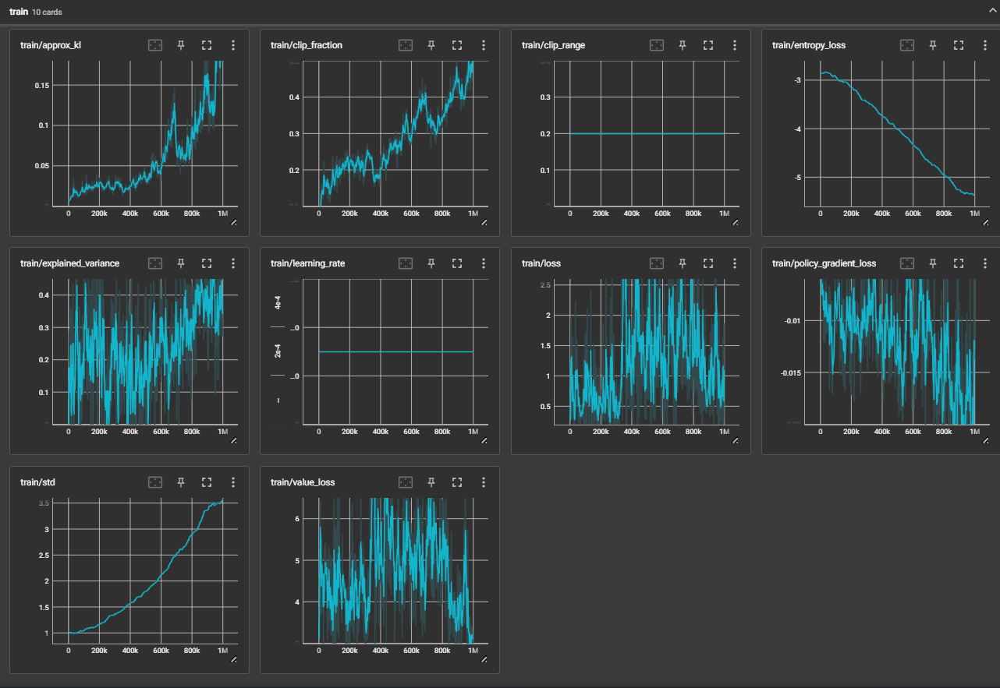
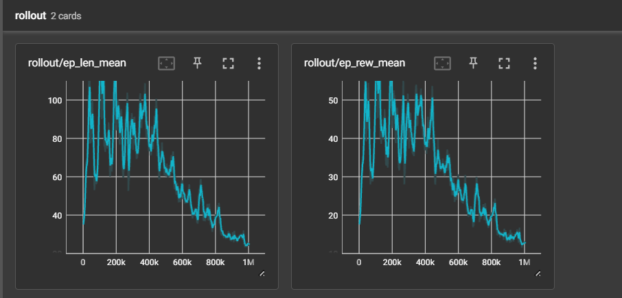
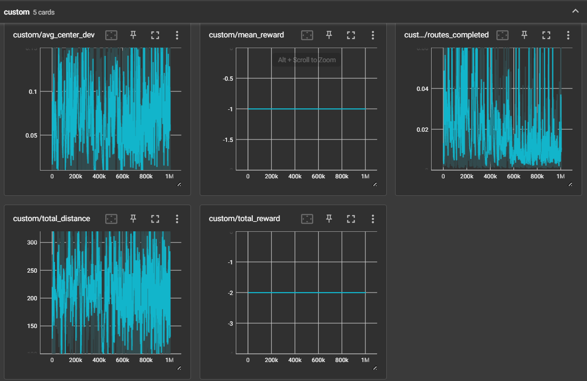
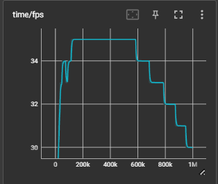
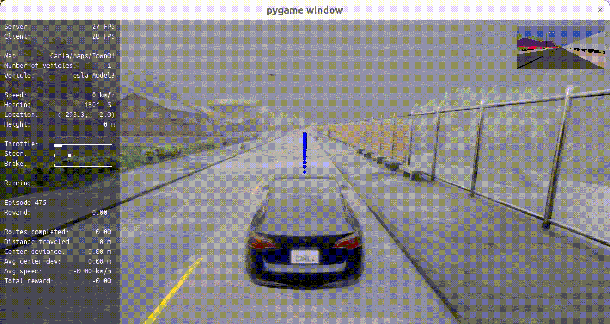

基于 PPO 算法的 CARLA 自动驾驶系统
项目简介
本项目基于 CARLA 0.9.15 仿真器，使用 PPO 强化学习算法训练自动驾驶智能体。智能体通过语义分割传感器感知环境，学习控制油门、刹车和方向盘，实现沿路径的自主行驶。本项目对原始 reward 函数进行了多项优化，使训练从无法收敛（ep_rew_mean ≈ 0）提升至 ep_rew_mean = 30.1。
硬件与开发环境
- 操作系统: Windows 10
- 显卡环境: RTX 4050 Laptop GPU (6GB)
- 仿真器版本: CARLA 0.9.15
- Python 版本: 3.10
- 核心依赖: PyTorch, Stable-Baselines3, Gym, NumPy
- Conda 环境: carla_rl
安装步骤
# 克隆仓库
git clone https://github.com/YuHang-Zhou/nn.git
cd nn
# 安装依赖
pip install -r src/auto_drive_system/requirements.txt
目录结构
src/auto_drive_system/
├── agent/ # 智能体相关代码
│ └── reward.py # 奖励函数定义
├── carla_utils/ # CARLA 工具函数
├── core_rl/ # RL 核心训练逻辑
├── navigation/ # 导航模块
├── tools/ # 辅助工具
├── util/ # 通用工具函数
├── utilities/ # 工具类
├── config.py # 配置文件（算法参数、奖励参数等）
├── train.py # 训练入口脚本
├── carla_da_dynamic.py # 动态数据增强
├── carla_da_dynamic_with_camera.py # 摄像头动态数据增强
├── carla_da_static.py # 静态数据增强
├── utils.py # 环境封装与工具函数
└── requirements.txt # 依赖列表
使用方法
训练
# 启动 CARLA 仿真器
./CarlaUE4.sh -RenderOffScreen
# 在本地运行训练
cd src/auto_drive_system
python train.py --host "localhost"
# 指定参数训练
python train.py --host "localhost" --town Town01 --total_timesteps 1000000 --fps 20
训练参数
| 参数 | 说明 | 默认值 |
|---|---|---|
--host |
CARLA 服务器 IP | 远程 IP |
--port |
CARLA 服务器端口 | 2000 |
--town |
训练地图 | Town01 |
--total_timesteps |
总训练步数 | 1000000 |
--reload_model |
加载已有模型继续训练 | None |
--fps |
仿真帧率 | 20 |
--config |
配置文件路径 | None |
--num_checkpoints |
保存检查点数量 | 5 |
--no_render |
关闭渲染 | False |
配置说明
配置文件位于 config.py，主要参数：
- algorithm: RL 算法选择（支持连续动作空间算法）
- algorithm_params: 算法超参数（详见 Stable-Baselines3 文档）
- action_smoothing: 是否启用动作平滑
- reward_fn: 奖励函数选择（见
agent/reward.py） - reward_params: 奖励函数参数
- obs_res: 观测分辨率（推荐 160×80）
奖励函数优化
原始 reward 函数采用乘法组合（speed × centering × angle），存在以下问题：
修复的问题
- 角度跨 0°/360° 计算 bug:
wayp_angle=359, veh_angle=1时，abs(359-1)=358，导致角度因子错误归零。添加normalize_angle函数修复。 - 速度奖励跳变: 低速区间奖励从 -0.2 直接跳到正值，梯度信号不稳定。改为平滑线性插值。
- 低速计时器累积 bug:
low_speed_timer只加不减，应改为速度恢复时重置，实现"连续低速才终止"。 - 终止惩罚固定: 活 60 步和活 5 步终止惩罚相同（-1），改为随步数缩放。
优化策略
- 乘法改加权求和: 每个维度独立梯度信号，不再一个维度归零就全部归零
- 加入低速惩罚: 速度 < 5 km/h 直接扣分，防止"不动"策略
- 居中因子二次衰减: 靠近中心时奖励更敏感，偏离时惩罚更猛
- waypoint 前进奖励: 为 reward_fn5 增加"往前开"的明确信号
训练结果
训练 100 万步后的关键指标：
| 指标 | 优化前 | 优化后 |
|---|---|---|
| ep_rew_mean | ≈ 0 | 30.1 |
| ep_len_mean | 极短 | 61.1 |
| avg_center_dev | - | 0.0821 |
| avg_speed | 0 | 1.91 km/h |




运行效果

注意事项
- 本项目默认在双机模式下运行（一台跑 CARLA，一台跑 RL Agent），
--host参数默认为远程 IP。本地运行需设为localhost。 - CARLA 仿真器建议使用
-RenderOffScreen模式，减少 GPU 开销。 - 训练过程中建议开启 TensorBoard 监控：
tensorboard --logdir=./rl_sb3_carla_log